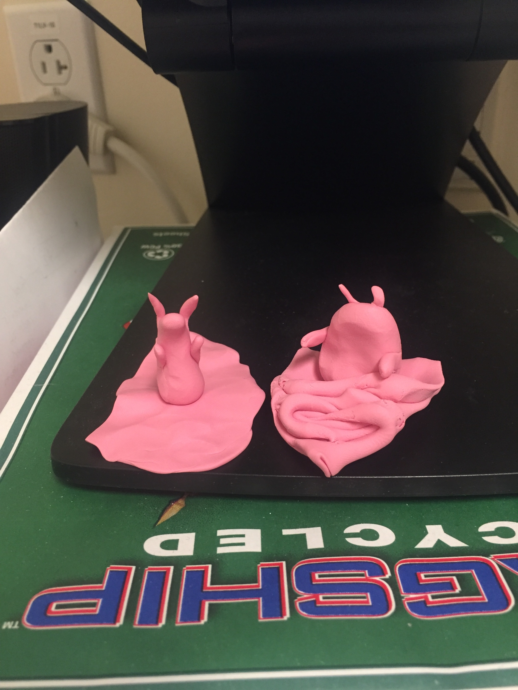

I host a weekly experimental
radio show at the Somerville Media Center called
Stochastic Fantastic .
I also like to make playlists;
init is in progress and on shuffle.
Sometimes I make sketches in Processing. I also write poems, paint with watercolors, and dance as often as possible.
